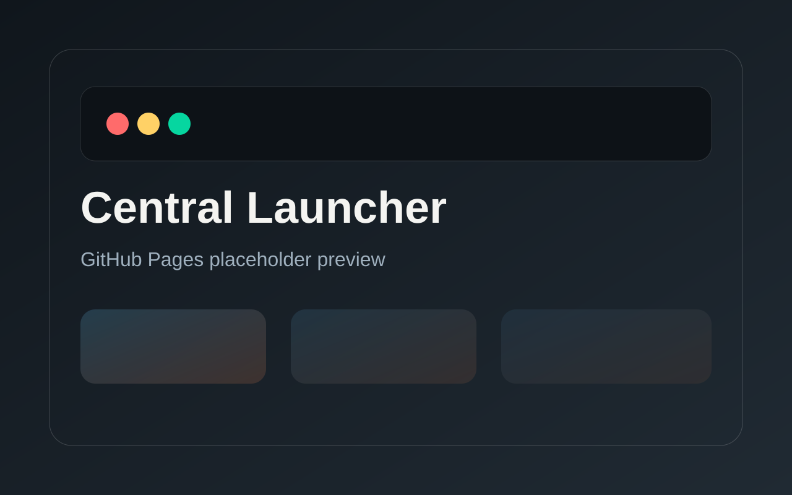
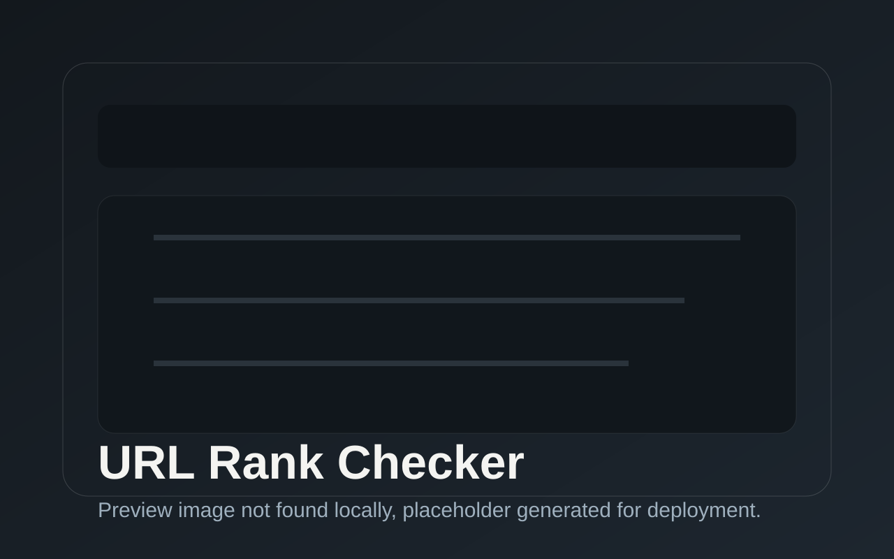
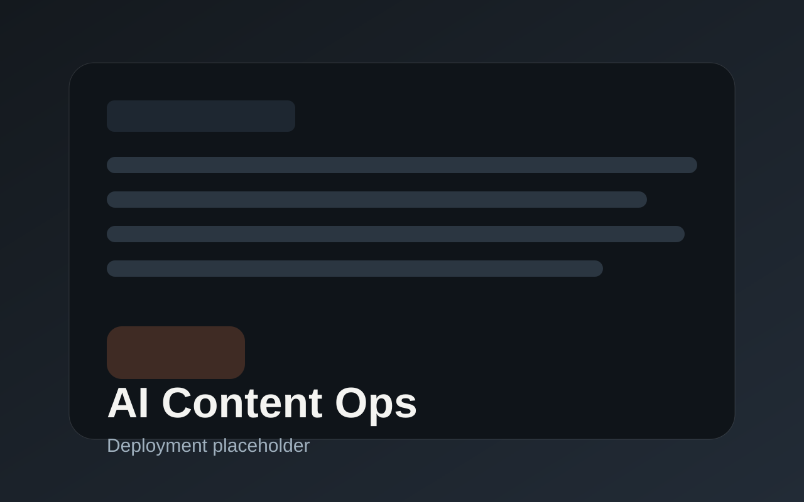
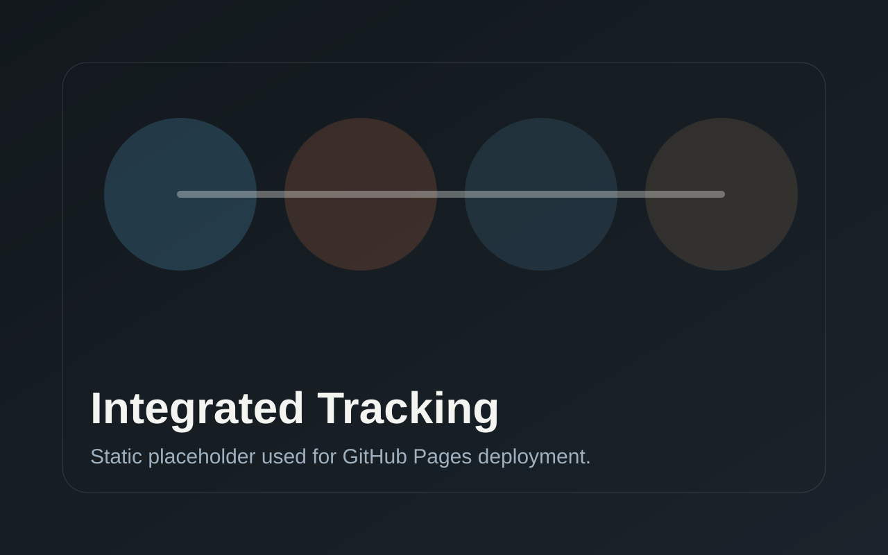

Marketing Ops / Automation / AI
반복 업무를 실행 가능한 자동화 시스템으로 전환합니다
단순 스크립트가 아니라 중앙 런처, GUI, 배포 구조, 결과 기록 체계까지 설계했습니다. 비개발자도 바로 사용할 수 있는 실무형 자동화 포트폴리오입니다.
root@system:~$ build --portfolio
Initializing 24+ automation systems...
✔ 13 Launcher Programs Connected
✔ AI Content Generation Pipeline Active
✔ wp-cms Database Sync Complete
root@system:~$ Starting visual engine..._
Marketing Ops / Automation / AI
단순 스크립트가 아니라 중앙 런처, GUI, 배포 구조, 결과 기록 체계까지 설계했습니다. 비개발자도 바로 사용할 수 있는 실무형 자동화 포트폴리오입니다.
Profile & Experience
ckdwns157002@gmail.com
What I Built
이 프로젝트는 단순 스크립트가 아닌, 실제 사내 마케팅 업무에 적용된 자동화 운영 시스템입니다. Python, Selenium, GPT, Claude, Gemini를 개별적으로 사용하는 수준을 넘어서, 검색 → 콘텐츠 생성 → 실행 → 결과 관리까지 하나의 프로세스로 통합했습니다.

Featured Project 01
마케팅에 필요한 여러 프로그램을 한곳에서 배포하고 실행하는 중앙 운영 허브
개별 프로그램이 늘어날수록 설치와 업데이트, 버전 관리가 복잡해지기 때문에 런처를 따로 만들었습니다. 매니페스트와 릴리스 자산을 기준으로 설치, 업데이트, 실행 흐름을 묶어 제품군 전체를 중앙 관리하도록 설계했습니다.

Featured Project 02
특정 URL의 실제 노출 여부와 순위를 반복 확인하는 실무형 점검 도구
일반 검색, 카페, 블로그 탭에서 원하는 URL이 실제로 노출되는지 수작업으로 확인하는 과정은 느리고 오류가 많았습니다. 이 프로그램은 키워드 목록을 기준으로 검색 결과를 반복 점검하고, 결과를 엑셀 형태로 정리해 운영에 바로 연결할 수 있게 만들었습니다.

Featured Project 03
AI 모델을 활용해 제목과 본문을 생산하고 보정하는 콘텐츠 생산 도구
AI를 단순히 사용한 것이 아니라, 여러 모델을 비교하고 결과를 보정하는 흐름 자체를 도구로 묶었습니다. 제목과 본문을 일괄 생성하고, 재시도와 후처리까지 연결해 실제 운영에 쓸 수 있는 수준으로 정리한 프로젝트입니다.

Featured Project 04
카페와 블로그 노출을 한 흐름에서 추적하고 기록하는 통합 추적 도구
검색 결과가 고정되지 않는 환경에서는 단순 수집보다 반복 추적과 결과 기록이 중요합니다. 이 프로그램은 통합 검색과 블록 영역 기준으로 노출을 확인하고, 데이터를 시트와 연동해 운영 기록까지 이어지도록 구성했습니다.
Featured Project 05
노출 상태 판단과 시트 기반 단계 이동을 처리하는 운영 프로세스 엔진
이 프로젝트의 핵심은 단순한 판정 기능이 아니라, 판정 이후 어떤 단계로 이동시키고 어떤 로그를 남길지까지 포함한 운영 흐름입니다. dry-run과 실제 실행을 분리하고, 시트 이동과 기록 구조를 표준화해 재현 가능한 프로세스로 만들었습니다.
naver-image-searcher, Individual-manuscript-program
naver-autocomplete-extractor ~ cafe-automation 탑재
wp-cms 개발 및 프레임워크 아키텍처 환경 구축
Core Architecture
실무에서 진정으로 필요한 자동화는 파편화된 도구들을 수없이 찍어내는 것이 아닙니다. 저는 키워드 추출, 랭킹 확인, 카페 자동화 등 24개가 넘는 프로그램을 기획하고 개발했으며, 이 중 핵심적인 13개의 툴은 중앙 런처 시스템에 탑재하여 비개발자도 클릭 한 번으로 안전하게 업데이트하고 실행할 수 있는 통합 생태계를 완성했습니다.
Tech Stack
수십 개의 완성된 프로젝트들은 단일 언어나 프레임워크 안에 갇혀 있지 않습니다. 브라우저 자동화에는 Selenium과 Playwright를, 데이터 적합성 검증에는 Google API를, 그리고 비개발자용 중앙 배포를 위해 데스크탑 앱 환경을 엮어 하나의 일관된 생태계를 만듭니다.
Let's Connect
지금까지 보신 프로젝트에 대해 더 궁금한 점이 있으시거나, 협업 및 채용에 관한 제안이 있으시다면 언제든 연락 부탁드립니다.